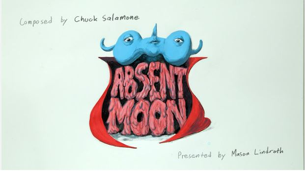
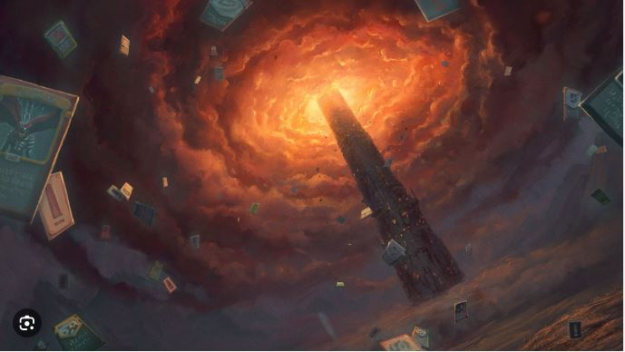
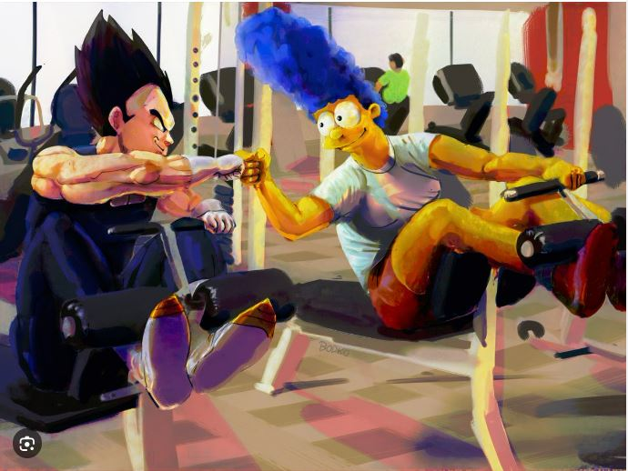
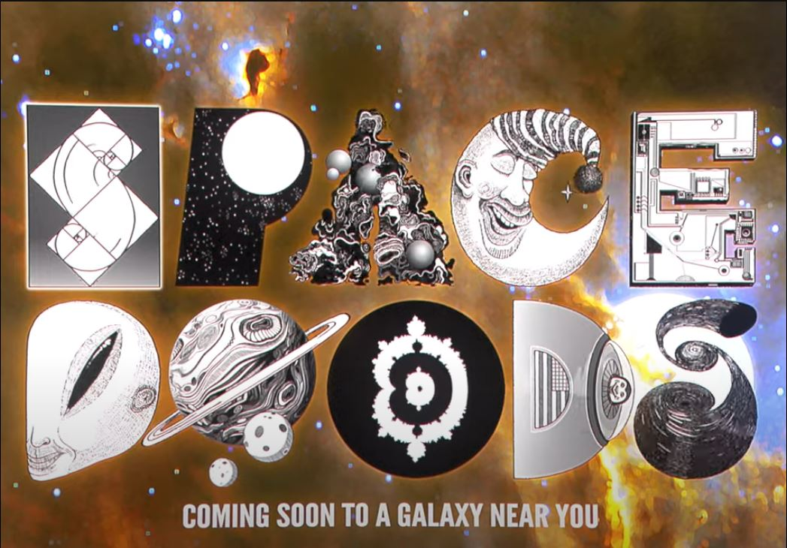
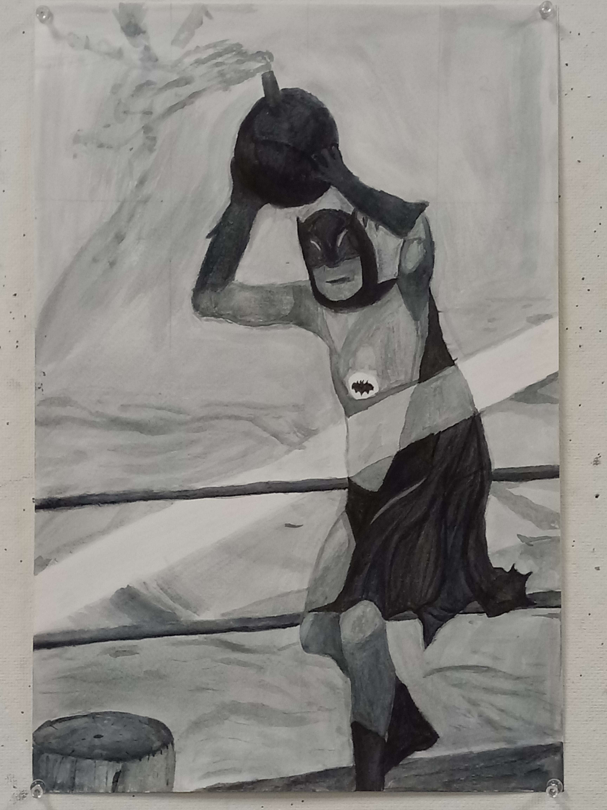
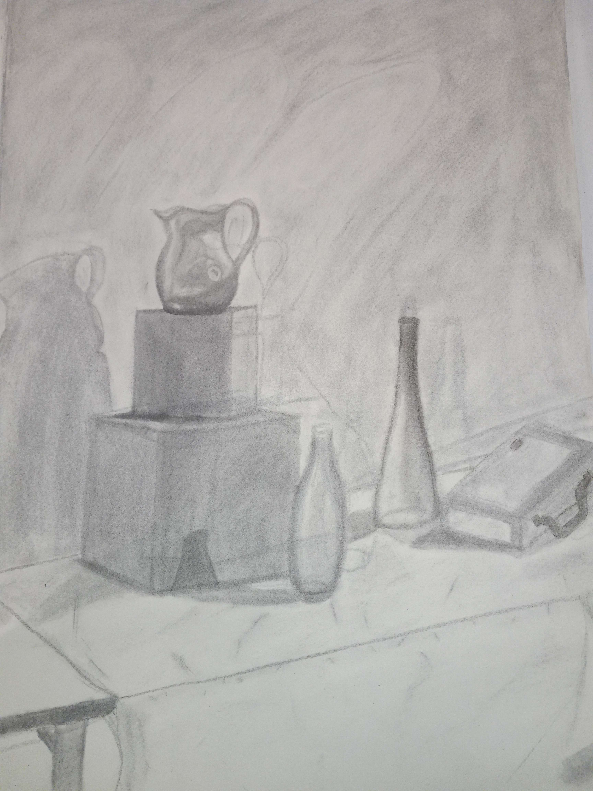

|  |
 |
 |
 |
 |
 |
Art has had a significant influence on me, though my taste might be different from others.
I'm not a fan of abstract art or modern museum displays. Instead, I appreciate art that is
enjoyable to look at or experience. For me, the video game Journey is a perfect example of art.
Its atmosphere, destinations, and overall design create a beautiful experience.
Traditional art forms like animation have also deeply impacted me. The works of Genndy Tartakovsky
on Cartoon Network are unforgettable and inspire me to be more creative. These visual art forms go beyond
traditional art for me, encouraging me to think outside the box and express myself in new ways.
When I think about art, I think about the things that truly move me. Journey, a video game, is a
great example. The game's design and atmosphere are beautiful, making every part of the game feel
special. This kind of art makes me feel something deep inside, which is what I think art should do.
I also have a deep appreciation for animation. The works of Genndy Tartakovsky,
especially on Cartoon Network, have always inspired me. Shows like Samurai Jack and Dexter's Laboratory
are not just entertaining; they are visually stunning. The creativity and skill that go into making
these shows are amazing. They inspire me to be creative in my own life and to appreciate the art that
goes into animation.